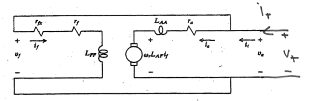
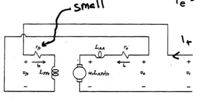

- Review of Symbols
- Flux and Flux Density
- Gauss's Law and Kirchoff's Flux Law
- Relation to Ohm's Law
- DC Machines
- Field Energy and Coenergy
- Force
- AC Machines
- Flux Linkage and Magnetizing Inductance
- PM Terms
- Torque
- Reference Frame
- Useful Relations
- exam
Review of Symbols
- i - current in amperes
- H - magnetic field intensity (amperes/meter = Tesla)
- B - magnetic flux density (amperes/meter = Tesla)
- F - magneto-motive force (amperes)
- R - reluctance (1/henries)
- $λ$ - flux linkage in volt-seconds
- \(\phi\) - flux in webers
Flux and Flux Density
\[\phi = \int_S B \cdot \overrightarrow{dS}\]
Let a uniform flux density flow through some surface \(S_m\) at various angles. Find the flux. a) \[\int_{S_m} B \cdot \overrightarrow{dS} = (B \hat{a_y}\ \text{T})(S_m \hat{a_y}\ \text{m}^2) = BS_m\ \text{Wb}\] b) \[\int_{S_m} B \cdot \overrightarrow{dS} = (B \hat{a_y}\ \text{T})(S_m \frac{\hat{a_y} + \hat{a_z}}{\sqrt{2}}\ \text{m}^2) = \frac{BA}{\sqrt{2}}\ \text{Wb}\] c) \[\int_{S_m} B \cdot \overrightarrow{dS} = (B \hat{a_y}\ \text{T})(S_m \hat{a_z}\ \text{m}^2) = 0\ \text{Wb}\]
{kind=link}
Gauss's Law and Kirchoff's Flux Law
Since there are no magnetic monopoles, we have \[\oint B \cdot \overrightarrow{dS} = 0\] (Gauss's Law)
Written another way, using the relation from before: \(\sum \phi = 0\) (Kirchoff's Flux Law)
Relation to Ohm's Law
\(F = \phi \underbrace{R}_\text{reluctance}\)
DC Machines
Some DC machines have two separate electrical systems.
{kind=link}
Field Winding
Armature Winding
The voltage across the armature winding can be given by
Separately Excited Machine
{kind=link}
\[v_a = r_a i_a + L_{AF} i_f \omega_r + \underbrace{L_{AA} \frac{d}{dt} i_a}_0\]
\[T_e = L_{AF} i_a i_f\]
\[P_{out} = T_e \omega_r\]
$$Pin = va ia + vf if
Shunt Connected Machine
 In a shunt connected machine, \(v_t = v_a = v_f\), and \(i_t = i_a + i_f\).
{kind=link}
\[T_e = L_{AF} \frac{V_t}{r_f}(1 - L_{AF}\ \omega_r / r_f)\]
Stall torque: \(L_{AF} \frac{V_t^2}{r_f r_a}\) No load speed: \(\frac{r_f}{L_{AF}}}\)
\[P_{out} = T_e \omega_r\]
$$Pin = va ia + vf if
Series Connected Machine
 In a series connected machine, \(v_t = v_a + v_f\) and \(i_t = i_a = i_f\).
{kind=link}
\[v_t = r_a i_t + L_{AF} \omega_r i_t + r_f i_t\]
\[T_e = L_{AF} i_t^2\]
Permanent Magnet Machine
\(v_a = r_a i_a + k_v \omega_r + \underbrace{L_{AA} \frac{d}{dt} i_a}_0\)
\(T_e = k_t i_a\)
Field Energy and Coenergy
Force
force: \(f_e = - \frac{dW_f(\lambda, x)}{dx}\)
force: \(f_e = \frac{dW_c(\i, x)}{dx}\)
AC Machines
In an AC machine, the poles on the stator rotate (via switching) and the poles on the rotor follow them. Teeth in AC machines are designed to allow flux flow in one direction and current flow orthogonally.
For a given frequency, each additional pole reduces the machine speed by \(p/2\), i.e. \(\omega_{rm} = \frac{2}{p} w_e\)
Mechanical Position
\(\theta_{rm}\) - measures rotor position relative to stator - counterclockwise \(\phi_{rm}\) - an arbitrary position relative to rotor - counterclockwise \(\phi_{sm}\) - an arbitrary position relative to stator - counterclockwise
Electrical Position
\(\phi_s = \phi_{sm} \frac{p}{2}\) \(\phi_r = \phi_{rm} \frac{p}{2}\) \(\theta_r = \theta_{rm} \frac{p}{2}\)
Discrete Winding
\[N_{x,i}\] is the number of conductors of an `x` phase winding in the `i`th slot.
[slot and tooth locations] where \(y\) is either \(r\) for stator or \(r\) for rotor
slot locations: \(\phi_{ys,i} = 2 \pi (i - 1)/S_y + \phi_{ys,1}\) tooth locations: \(\phi_{yt,i} = 2 \pi(i - 1/2)/ S_y + \phi_{ys,1}\)
Conductors coming out of the page are positive, and going in are negative.
Summing the number of conductors in every slot should yield zero: \[\sum_{i=1}^{S_y} N_{x,i} = 0\]
Continuous Winding
\(n_x(\phi_{ym}\) is the conductor density
- \(x\) is the winding phase - 'a', 'b', 'c', …
- \(y\) is the location - 's' for stator
conductor density example
total conductors
Symmetry
Due to the construction of the machine, the following statements are always true.
Machine Symmetry \(N_{x,i + 2 S_y / p} = N_{x,i}\) - regions that are two steps apart behave identically
\(N_{x,i + S_y/p = -N_{x,i}\) - regions that are one step apart behave oppositely
The same concept applies to discrete windings. \(n_x(\phi_m + 4 \pi / p) = n_x(\phi_m)\)
\(n_x(\phi_m + 2 \pi / p) = -n_x(\phi_m)\)
Where moving one pole means \(\frac{2 \pi}{p}\) radians, \(\frac{S_y}{p}\) slots
Winding Arrangement Notation

\[N_{as} \right_{1-18} = N [ \begin{matrix}0 0 0 1 2 2 1 0 0 0 0 0 -1 -2 -2 -1 0 0 \end{matrix} ]\]
\(p = 4\) \(S_s = 36\)
Winding Types
The following windings have the same number of conductors in the slots, but they differ in terms of loss, amount of copper, and difficulty to wind.

Winding Function
Discrete Winding
For DC machines, MMF drop was defined as \(F = iN\), where \(i\) is the current and \(N\) is the number of windings.
For AC machines, we define the MMF drop in a similar way.
\[W = \frac{1}{2} \sum_{i=1}^{S_y /P} N_{x,i}\]
\(W_{x,i+1} = W_{x,i} - N_{x,i}\)
\(F = iW\)
where \(W\) is the winding function
Let \(N_x = [10 20 10 -10 -20 -10 10 20 10 -10 -20 -10]^T\)
Since the winding pattern repeats \(p/2\) around the machine, we have a 4 pole machine since the winding pattern repeats twice.
\(W_1 = \frac{1}{2} \sum_{i=1}^{s/p} N_i = \frac{1}{2} (10 + 20 + 10) = 20\)
\(W_2 = W1 - N_1 = 20 - 10 = 10\)
\(W_3 = W2 - N_2 = 10 - 20 = -10\)
\(W_4 = W3 - N_3 = -10 - 10 = -20\)
Continuous Winding
Suppose we would like to find the winding function at some point \(W(\phi + \delta \phi)\) given that we know \(W(\phi)\)
Consider \(n_{as} = 100 \sin(\phi_{sm})\) Find the winding function.
\(\int 100 \sin(\phi_{sm}) d \phi_{sm} = -100 \cos(\phi_{sm})\)
\[\begin{aligned}W_{as} &= \frac{1}{2} \int_0^{2 \pi /2 } 100 \sin(\phi_{sm}) d \phi_{sm} - \int_0^{\phi_{sm}} 100 \sin(\phi_{sm}) d \phi_{sm} \\ &= 50 - -50 + 100 \cos(\phi_{sm}) - 100 \\ &= 100 \cos(\phi_{sm} \end{aligned}\]
Distributed MMF
MMF is dependent on position as well as current.
\(\mcal{F}_s(\phi_m) = \sum_{x \in X_s} w_x(\phi_m) i_x\) missing stuff
#+begindefiniiton MMF drop
\[\mcal{F}_g = \int_{\text{rotor}}^\text{stator} H(\$ *missing stuff*
#+end_definition
#+begin_proof
$F_g(0) - F_g(\phi_m) = i_{enc} = $\int_0^{
#+end_proof
$J = \sum_{x} n_x i_x$, where $n_x$ is in units of conductors/radian.
$F_g(0) - F_g(\phi_m) = \int_0^{\phi_m} \sum_{x} n_x i_x d \phi_m$
Since $i_x$ is not dependent on $\phi_m$ and since summation and integraiton are linear operators, $F_g(\phi_m) = F_g(0) - \sum_x i_x \int_0^{\phi_m} n_x$
\]\begin{aligned}Fg() &= -Fg(0)
&= Fg(0) - ∑x ix ∫02 π /p nx d ϕm \end{aligned}\[
so $F_g(0) = \sum_x i_x \int_0^{2 \pi / p} n_x d \phi_m$
plugging in $F_g(0)$,
\]\begin{aligned}Fg(ϕm) &= ∑x ∫02 π / p nx d ϕm
&= ∑x ix \left[
&= Fs(ϕm) + Fr(ϕm) \end{aligned}\[
where $X_s$ are the stator windings and $X_r$ are the rotor windings.
Once we have the MMF drop, we can find flux density $\lambda$, winding inductance and have a better understanding of the machine.
$F_g = \int_{\text{rotor}}^{\text{stator}} H \cdot dr \approx H_g g$.
$B_g = \mu_0 \mu
$B_g(\phi_m) = \frac{
$B_x = \frac{\mu_0 F_x(\phi)}{g(\phi)$ - useful for finding self and mutual inductance
#+begin_examples
1. Suppose
- $w_{as} = 100 \cos(4 \phi_{sm})$, $i_{as} = 10$
- $w_{as} = 50 \cos(4 \phi_{sm})$, $i_{bs} = 5$
- $g = 1e-3$
\]\begin{aligned} Fs &= was ias + wbs ibs
&= 500 cos (4 ϕsm) + 500 sin (4 ϕsm)
&= 500 cos (4 ϕsm - π/4) \end{aligned}\[
$B = \frac{\mu_0 F_s}{g} = \underbrace{\frac{(4 \pi \cdot 10^{-7}) (500 \sqrt{2})}{10^{-3}}}_{\text{peak = 0.88 T}} \cos(4 \phi+{sm} - \pi/4)$
#+end_examples
* Rotating MMF
*missing*
\]\begin{aligned} Fs = Is
&= Is cos ( ϕsm +
Notice that \(F, B, H\) are sinusoidal in space and time.
Setting \(\cos\) equal to \(0\), we get \(\frac{p}{2} \phi_{sm} - \omega_e t - \phi_i = 0\)
so \(\phi_{sm} = \frac{2}{p} ( \omega_e t + \phi_i)\)
and \(\frac{d \phi_{sm}}{dt} = \omega_{rm} = \frac{2}{p} \omega_e\)
Unbalanced Two Phase
Assume $ias = $, \(i_{bs} = 0\).
then
\[\begin{aligned} F_s &= \frac{2 N_s}{p} \cos(\frac{p}{2} \phi_{sm}) \sqrt{2} I_s \cos (\omega_e t + \phi_i) \\ &= \frac{N_s \sqrt{2} I_s}{p} \left[ \underbrace{\cos(\frac{p}{2} \phi_{sm} - \omega_e t - \phi_i)}_\text{forward travelling} + \underbrace{\cos( \frac{p}{2} \phi_{sm} + \omega_e t + \phi_i)}_\text{backwards travelling} \right] \end{aligned}\]
forward travelling - travels at same speed as before : backward travelling - $ϕsm = - The backwards travelling waves introduce inefficiency to the machine.
In single phase wired houses, many devices use a single phase input then create a secondary shifted phase with a capacitor. This increases the forward travelling wave and reduces the backwards travelling wave.
Three Phase
\(n_{as}(\phi_{sm}) = N_{s1} \sin(P \phi_{sm} / 2) - N_{s3} \sin(3 p \phi_{sm} /2 )\) \(n_{bs}(\phi_{sm}) = N_{s1} \sin(P \phi_{sm} / 2 - 2 \pi / 3) - N_{s3} \sin(3 p \phi_{sm} /2 )\) \(n_{cs}(\phi_{sm}) = N_{s1} \sin(P \phi_{sm} / 2 + 2 \pi / 3) - N_{s3} \sin(3 p \phi_{sm} /2 )\)
missing winding function
missing currents
\(\mathbb{F}_s = \frac{3 \sqrt{2} N_{s1} I_s}{P} \cos( P \phi_{sm} /2 - \omega_e t - \phi_i)\)
Flux Linkage and Magnetizing Inductance
\(\lambda_x = \underbrace{\lambda_{xl}_{\text{leakage}} + \underbrace{\lambda_{xm}}_{\text{magnetizing}}\)
missing latex right | \(L_{xy} = \frac{\lambda_x \text{due to }i_y}{i_y} = \frac{\lambda_{xl}}{i_y} + \underbrace{\frac{\lambda_{xm}}{i_y}}_{L_{xym}\)
missing eqn vv $Lxym = \frac{λxym{iy} = μ
Suppose missing supposition p78
Find the magnetizing inductance between the two phases.
missing correct 1st line p78 \[\begin{aligned}L_{asbs} &= \frac{\mu_0 r l}{g} \int_0^{2 \pi} \left(\frac{2 N_s}{p}\right)^2 \cos (\frac{p}{2} \phi_{sm} \cos(\frac{p}{2} \phi_{sm} - \frac{2 \pi}{3}) d \phi_{sm} \\ &= \frac{\mu_0 r l}{2g} \frac{4 N_s^2}{p^2} \int_0^{2 \pi} \cos( p \phi_{sm} - \frac{2 \pi}{3} ) + \cos(\frac{-2 \pi}{3}) d \phi_{sm} \\ &=\frac{\mu_0 r l}{2g} \frac{4 N_s^2}{p^2} \cdot (0 - \frac{1}{2}) 2 \pi = \frac{-2 \pi \mu_0 r l N_s^2}{P^2 g} \end{aligned}\]
Suppose we have an induction machine. missing supposition p79
\(w_{ar} = \frac{1}{2} \int_0^{2 \pi /p} n_{ar} d \phi_{rm} - \int_0^{\phi_{rm}} n_{ar} d \phi_{rm} = \frac{-N_{r1}}{p} \left[ \cos( \pi ) - \cos(0) \right] + \frac{2}{p} N_{r1} \left[ \cos( \frac{p}{2} \phi_{rm} - \cos( 0) \right]\)
missing final expression for war $war = $
\(L_{asar} = \frac{rl \mu_0}{g} \int_0^{2 \pi} w_{as} (\phi_{sm}) w_{ar}(\phi_{rm}) d \phi_{sm}\), where \(\phi_rm = \phi_{sm} - \theta_{rm}\)
Using a trig identity and simplifying \(L_{asar} = \frac{4 \pi r l \mu_0 N_{s1} N_{r1}}{g P^2} \cos \left( \underbrace{\frac{p}{2} \phi_{rm}}_{\text{\phi_r}} \right)\)
PM Terms
\[\begin{aligned} \lambda_{asm} &= \int_0^{2 \pi} w_{as} B_{pm} r l d\frac{2}{p} d \phi_s \\ &= \int_0^{2 \pi} w_{as} B_{pm} r l d \phi_s \\ &= \int_0^{2 \pi} \frac{2N_s}{p} \cos( \theta_r + \phi_r ) B_{pm} r d \phi_r \\ &= \frac{2N_s}{p r l \int_0^{2 \pi} B_{pm} \cos( \theta_r + \phi_r ) d \phi_r \\ &= \underbrace{\frac{8 N_s r l B_{pm}}{p}}_{\lambda_m'} \sin ( \theta_r ) \end{aligned}\]
Torque
\(T_e = \underbrace{\frac{p}{2} \frac{d w_{cpm}}{d \theta_r}}_{\text{cogging torque}} + \frac{p}{2} \lambda_m' \left[ i_{as} \cos(\theta_r) + i_{bs} \cos( \theta_r \frac{2 \pi}{3}) i_{cs} \cos (\theta_r + \frac{2 \pi}{3} ) \right]\)
Reference Frame
\(f_{qd0s}^r = K_s^r f_{abcs}\) - where \(r\) represents the rotor reference frame
\((f_{qd0s}^r)^T = [ \begin{matrix} f_{qs}^r & f_{ds}^r & f_{0s} \end{matrix} ]\)
\[K_s^r = \frac{2}{3} \left[ \begin{matrix} \cos \theta_r & \cos( \theta_r - \frac{2}{3} \pi ) & \cos(\theta_r + \frac{2}{3} \pi ) \\ \sin \theta_r & \sin( \theta_r - \frac{2}{3} \pi ) & \sin(\theta_r + \frac{2}{3} \pi ) \\ \frac{1}{2} & \frac{1}{2} & \frac{1}{2} \end{matrix} \right]\]
\[\underbrace{\left[ \begin{matrix} v_{qs}^r \\ v_{ds}^r \\ v_{0s} \end{matrix} \right]}_{V_{qd0s}^r} = K_s' \underbrace{\left[ \begin{matrix} V_{as} \\ V_{bs} \\ V_{cs} \end{matrix} \right]}_{V_{abcs}}\]
Useful Relations
reluctance : \(R = \frac{l}{A \mu}\ \text{H}^{-1}\), where \(l\) is length, \(A\) is area, and \(\mu\) is permittivity note that \(\mu\) is not always constant and can depend on conductor current
flux : \[\phi = \frac{Ni}{R} = \int_A \overrightarrow{B} \cdot d \overrightarrow{S}\], where \(N\) is the number of loops, \(i\) is the current, \(R\) is reluctance, \(B\) is the flux density, and \(A\) is the cross sectional area
flux linkage : \(\lambda = N \phi = Li\), where \(N\) is the number of loops
MMF drop : \[F = Ni = \phi R = \oint \overrightarrow{H} \cdot d \overrightarrow{l}\]
\(V = \frac{d \lambda}{dt}\)
co energy : \[W_c = \left[ \int_{0}^{i_{1,f}} \lambda_1 di_1 \right]_{\substack{i_2 = 0 \\ ...}} + \dots + \left[ \int_{0}^{i_{n,f}} \lambda_n di_n \right]_{\substack{\dots \\ i_{n-1} = i_{n-1,f}}} = \frac{1}{2} i^T L i\]
conservative system : \[\left[ \begin{matrix} \lambda_1 \\ \vdots \\ \lambda_n \end{matrix} \right] = \underbrace{\left[ \begin{matrix} L_{11} & \dots & L_{1n} \\ \vdots & \ddots & \vdots \\ L_{n1} & \dots & L_{nn} \end{matrix} \right]}_{\text{inductance matrix}} \left[ \begin{matrix} i_1 \\ \vdots \\ i_n \end{matrix} \right]\]
if the inductance matrix is diagonally symmetric, then the system is conservative because \[\frac{d \lambda_j}{d i_k} = \frac{d \lambda_k}{d i_j}\]
force : \[f_e = \frac{1}{2} \frac{dL}{dx} i^2\] torque : \[T_e = \frac{1}{2} \frac{d \lambda}{d \theta_r} i^2\]
nick north : \[\frac{(\overrightarrow{H} \times \overrightarrow{C}) \times \hat{z}}{\left|(\overrightarrow{H} \times \overrightarrow{C}) \times \hat{z}\right|}\]
exam
- 27 stepper motor notes to end
- dc machines
- no lecture set 5